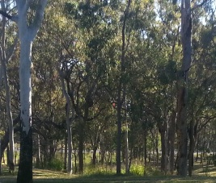
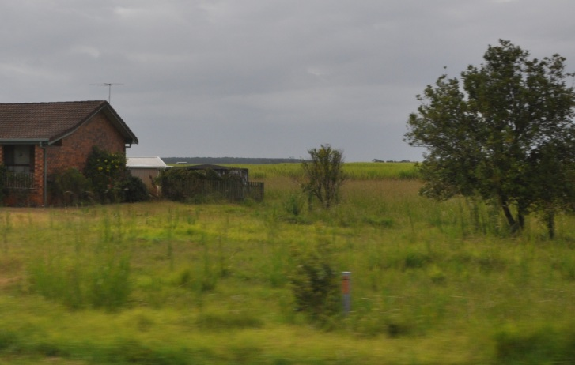
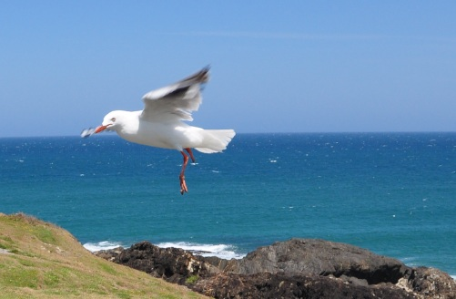
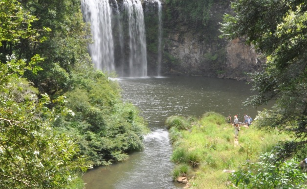
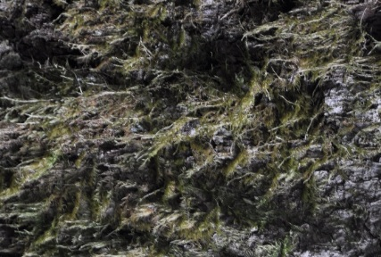
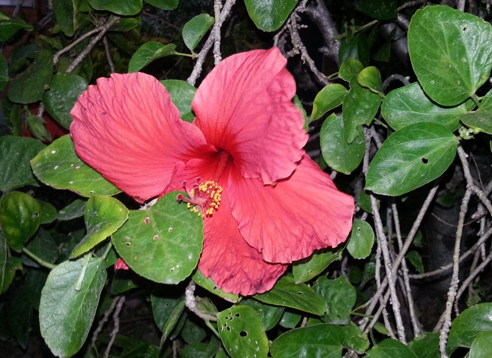
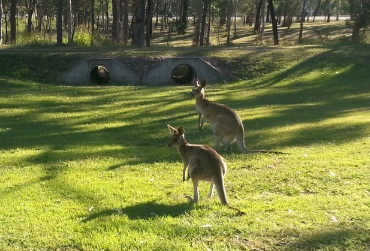
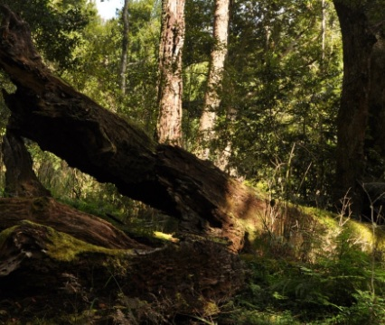

Welcome to the Get Outdoors Webpage!
Get Outdoors is an annual event organised by the Greenview Environmental Association. The event consists of two days of free activities designed to encourage Greenview residents to enjoy the outdoors and respect the environment. The program of events is provided below:
Saturday, 18 August, 2012
-
 Nature walk
9:00 am - 11:00 am
Take a nature walk through Mirkwood Forest
-
 Audrey’s Nursery Tour
11:00 am - 12:00 pm
Behind the scenes tour at Audrey’s Nursery
-
 Bird Watching
1:00 pm - 3:00 pm
Birdwatching at Rovio Nature Reserve
-
 Canoeing lessons
3:00 pm - 5:00 pm
Canoeing lessons at Lordamere Lake
Sunday, 19th August, 2012
-
 Fossil Hunt
10:00 am - 12:00 pm
Fossil hunt at Barney Park
-
 Wildflower Tour
1:00 pm - 3:00 pm
Wildflower tour on Amity Island
-
 Conservation Lecture
3:00 pm - 4:00 pm
Conservation lecture at Melman Zoo
-
 Tree Climbing
4:00 pm - 5:00 pm
Tree climb at Smokey National Park
All events are free and open to the public.